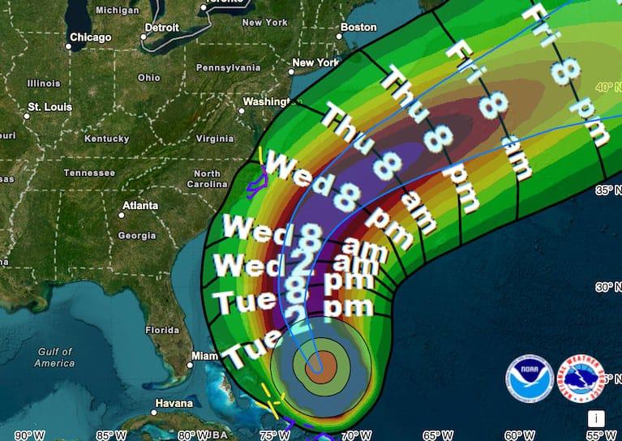
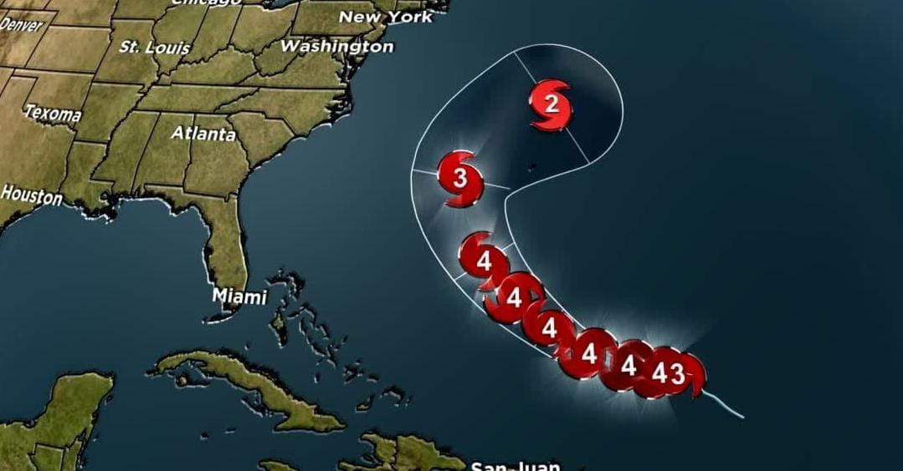
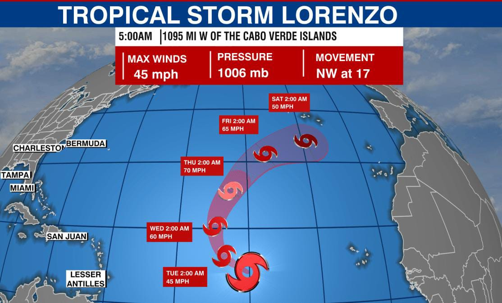
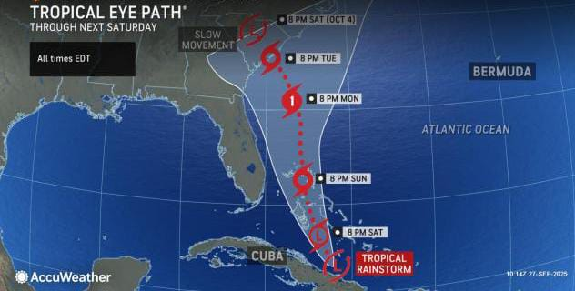

Recent North Atlantic Cyclones (2025)
Hurricane Erin
Origination: Cape Verde wave. Intensity: Category 5 (260 km/h). Magnitude: 910 hPa. Areas Affected: Lesser Antilles, Mexico. Causes: Record warm SSTs, low shear. Impacts: $2B damage, 50 deaths, 3m surge.

Hurricane Gabrielle
Origination: Central Atlantic wave. Intensity: Category 4 (215 km/h). Magnitude: 935 hPa. Areas Affected: Bermuda, Azores. Causes: High moisture, warm waters. Impacts: $10M flooding in Spain remnants, 140 mph peak.
Hurricane Humberto
Origination: Central Atlantic wave. Intensity: Category 5 (280 km/h). Magnitude: 905 hPa. Areas Affected: Open Atlantic. Causes: Rapid intensification, Fujiwhara effect. Impacts: Dangerous surf, 1 death in Florida.
Hurricane Lorenzo
Origination: Eastern Atlantic wave. Intensity: Category 5 (270 km/h). Magnitude: 915 hPa. Areas Affected: Azores. Causes: Warm SSTs, low shear. Impacts: $300M damage, 20 deaths in Azores.
Tropical Storm Imelda
Origination: Gulf low. Intensity: Tropical Storm (80 km/h). Magnitude: 1002 hPa. Areas Affected: Texas coast. Causes: Moist air, warm Gulf. Impacts: $1B flooding, 15 deaths, 1m rain in Houston.
